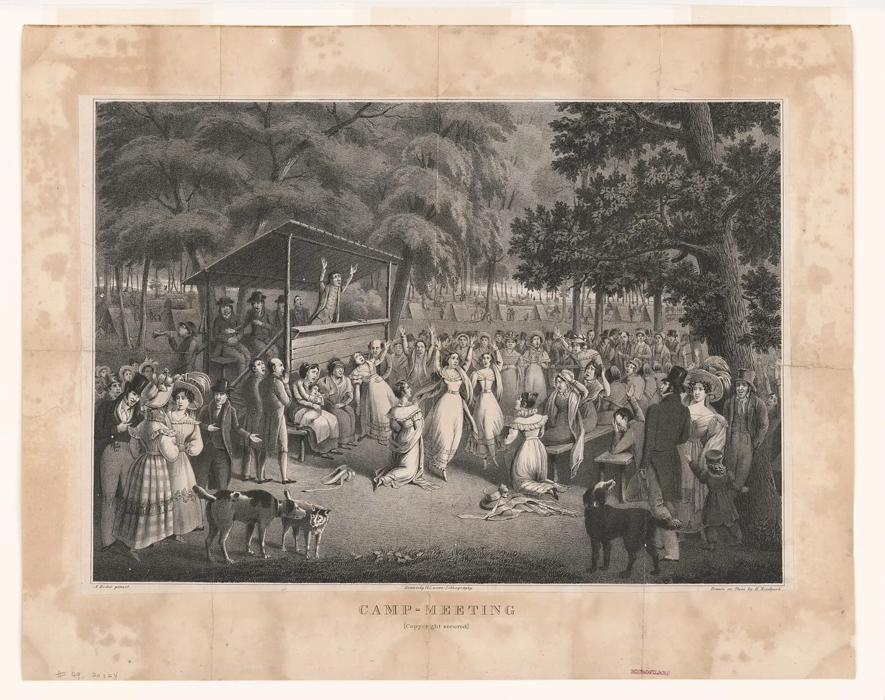
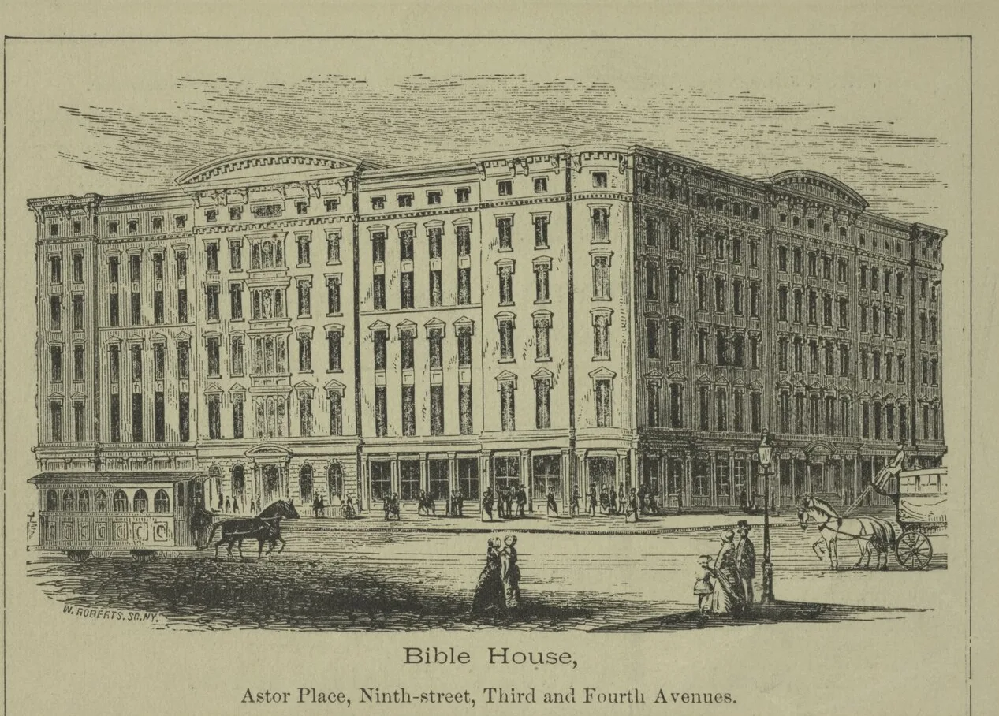
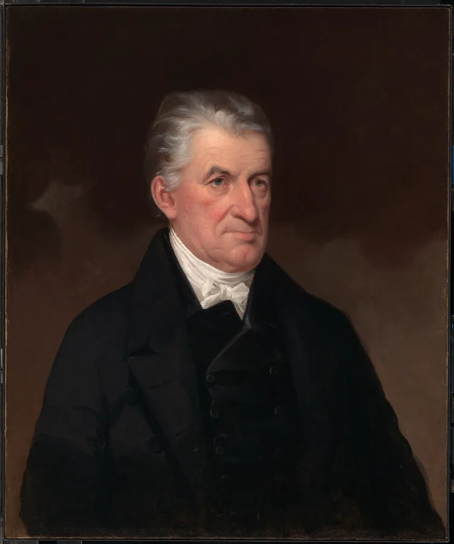
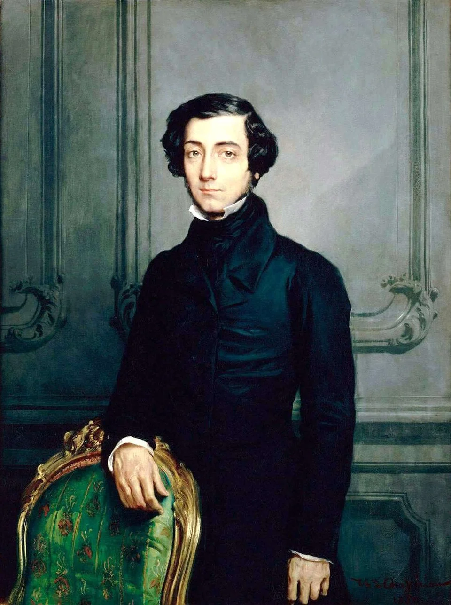
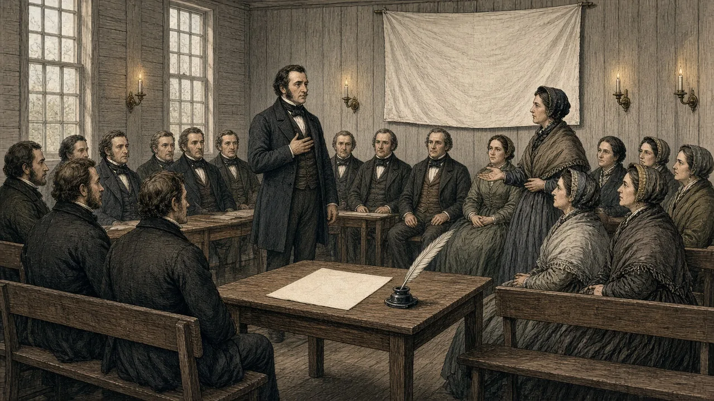

HIST 101 · Chapter 12 · Lecture 1
Civil Society and the Moral Republic
Antebellum Reform and the Art of Association
Professor Steven Austin – HIST 101
Welcome! This is your Study Buddy for Chapter 12, Lecture 1: how Americans held a free society together in the decades before the Civil War.
The story in one breath. After the Revolution, the United States had no king, no hereditary aristocracy, and, state by state, no tax-supported church. Many people expected such a society to fly apart. Instead, Americans built thousands of voluntary associations : Bible societies, Sunday schools, temperance societies, mutual-aid groups. Historians call that world civil society .
How to use these notes: click Open Study Buddy (lower right) or press N on any slide. Press N or Esc to close. Read the slide first, guess its point, then open the notes and check your guess. The background essay for this lecture tells the same story in more depth.
Check yourself: What three things did the young United States lack that European societies relied on to hold them together?
Opening Question
What holds a society together when there is no king?
Start with the question the whole lecture answers. What holds a society together when there is no king?
Europeans of the early 1800s had an easy answer for their own countries. A monarch, a titled aristocracy, and an established church set the moral rules, ran the charities, and told ordinary people where they stood.
The United States had thrown off its king and never had a hereditary aristocracy. Between 1818 and 1833 the last states cut their churches loose from tax support. So who would teach morals, help the poor, or organize public life?
Keep this question in your head as you go. By the end of the lecture you will have an answer, and you will see that it has two sides: one that empowered people and one that drew lines around who belonged.
Why this matters: every later slide in this lecture is part of the answer to this one question.
Check yourself: In a European monarchy, which institutions held society together?
Contextualizing the Age of Reform
Key Factors in the Early Republic
Church disestablishment meant churches had to compete and organize voluntarilyDemocratic expansion gave more citizens the franchise and political voiceThe Second Great Awakening inspired moral reform and activismMarket Revolution created both prosperity and new social problems
These forces combined to create an age of extraordinary voluntary organizing to address what they saw as social problems
Student Guide: Civil society didn’t just “appear.” It grew from real historical changes. As government institutions were still developing in the early Republic, Americans looked to churches, reform groups, and associations to solve problems and pursue shared values.
Church disestablishment: After the Revolution, no church received state funding in most states. Churches had to organize, fundraise, and inspire on their own — a major catalyst for voluntary action. It also trained people in mobilizing and communicating across communities.
Democratic expansion: More white men gained voting rights and political access. This broadened public participation and encouraged citizens to practice civic skills in groups before stepping into formal politics.
Second Great Awakening: This religious revival emphasized personal responsibility and moral improvement. It helped create reform energy — especially in abolition, temperance, and benevolence work — by linking faith to public duty.
Market Revolution: Rapid economic change lifted many but also created inequality, instability, and dislocation. Voluntary associations emerged to address new needs — poverty relief, moral guidance, and community support.
Historians Weigh In:
Nancy Cott highlights women’s associations as political training spaces before formal women’s rights activism.Daniel Walker Howe stresses how evangelical energy fueled civic participation and reform impulses.Sean Wilentz connects democratization to the rise of participatory politics beyond voting.
Big idea: Civil society grew because Americans suddenly had space — and responsibility — to build their own institutions.
Reflection: Think about who benefited most from these changes — and who was excluded. Access to civil society shaped power.
Reform did not appear from nowhere. Four changes came together between about 1810 and 1840.
Church disestablishment. Connecticut ended tax support for its Congregational churches in 1818, and Massachusetts, the last state, did so in 1833. Churches now had to persuade, organize, and raise money on their own. They got very good at it, and those skills spilled into reform.
Democratic expansion. Most states dropped property requirements for voting, so many more white men could vote. Notice the cost: several states narrowed Black voting at the same time, and no women could vote anywhere.
The Second Great Awakening. Revivals taught that people could choose salvation and should improve the world. That supplied moral urgency.
The Market Revolution. Canals, factories, and growing cities created new wealth and new problems, and they produced a middle class with the time and money to join societies.
Why this matters: these four forces explain why so many Americans started organizing at once.
Check yourself: Name the four forces, and say which one supplied the moral energy for reform.
From Revivalism to Reform
Moralistic worldview: Reformers interpreted social problems as struggles between good and evil
Evangelical Christianity shaped the language, goals, and energy of reformPersonal salvation was understood as inseparable from public moral responsibility
Many reform leaders believed a moral citizenry was essential to sustaining the republic
Revival preaching fostered a sense of duty to improve society, not just individual souls
Religious conviction was the driving force for most early reformers — though not the only source of reform energy in this era.

Camp-meeting, drawn on stone by Hugh Bridport after Alexander Rider; Kennedy & Lucas’s Lithography, 1829 (Library of Congress; public domain)
Student Guide: Revivalism didn’t stay inside the church. It spilled into public life. For reformers, improving one’s character and improving the nation were part of the same mission.
They saw problems like alcohol abuse, poverty, and slavery not as policy issues but as moral crises. To them, changing hearts and changing society went hand in hand.
Key idea: Religion provided the framework and motivation for early social movements. Believers felt called to uplift the nation through organized moral action.
Nuance: While evangelical Christianity dominated, other reform traditions — especially among free Black communities, women’s networks, and utopian thinkers — also contributed to the era’s reform energy.
Reflection: What happens when social change is framed as a moral mission? When is it empowering, and when might it limit empathy or tolerance for disagreement?
Picture an outdoor camp meeting: a preacher on a raised stand, a crowd among the trees, people weeping and singing for days. Camp meetings like this one launched the Second Great Awakening , a wave of revivals that ran from about 1800 into the 1840s.
The new preaching stressed choice. Sinners could decide to turn to God, and some preachers taught that converted Christians could live free of willful sin. If a person could change, so could a town or a nation.
For converts, salvation was not the end of the story. A changed life was supposed to show in work to improve the world. So reformers saw drinking, poverty, and slavery as moral battles between good and evil, not technical policy problems. That gave reform great energy, and it also made compromise hard. If your opponent is sinful, bargaining can look like surrender.
The lithograph is a real image from 1829, now in the Library of Congress.
Why this matters: religious conviction was the main fuel of early reform, though not the only one.
Check yourself: How did the revivalists' belief in human choice lead people toward social reform?
Antebellum Reform as Social Movements
Social movements sought to gradually transform American society — not through revolution, but through organized moral and civic action.
Reformers identified social problems as moral and civic responsibilities
Efforts targeted many arenas: education, temperance, prison reform, abolition, women's rights, and moral improvement
Change began in communities and spread outward through voluntary associations
Voluntary associations became the engines of reform — turning personal convictions into collective action
Student Guide: Reform didn’t come from Washington — it came from people gathering in churches, lecture halls, schoolhouses, and homes. These were early social movements: ordinary citizens identifying problems and joining together to fix them.
Moral + civic purpose: Many Americans believed social problems had moral causes and moral solutions. Their religious commitment and civic idealism fueled activism.
Voluntary associations: Reformers built organizations to coordinate efforts — raising money, printing pamphlets, organizing lectures, lobbying lawmakers, and mobilizing communities. Think of early versions of nonprofits, advocacy groups, and grassroots coalitions.
Big idea: Social movements and voluntary associations worked hand-in-hand. Movements supplied the vision; associations supplied the structure.
Reflection: Where do we see this pattern today? Community groups, social justice movements, student activism — the strategy endures.
This slide gives you a name for what reformers were building: social movements , organized efforts by ordinary people to change society.
Antebellum reformers did not want a revolution. They wanted to change society gradually, by persuading people. They worked on schools, drinking, prisons, slavery, women's rights, and personal morals.
Notice where the change started: in churches, lecture halls, schoolhouses, and parlors, not in Washington. People saw a problem, decided it was a moral and civic duty to fix it, and joined with others who agreed. Then their efforts spread outward, town by town.
The tool that made this possible was the voluntary association , which you meet on the next slide. Think of the movement as the vision and the association as the structure that carried the vision forward.
Why this matters: later lectures in this chapter (prisons, asylums, temperance, children) are all case studies of this pattern.
Check yourself: Where did antebellum reform usually begin, and how did it spread?
Voluntary Associations
What They Are
The right to form and join groups of one's choosing
Hallmark of a free society — protected by the First Amendment
People organize voluntarily to pursue shared goals and values
Why They Matter
Make civic cooperation possible outside government and markets
Give ordinary citizens power to influence society and policy
Train members in leadership, debate, fundraising, and organization
Voluntary associations were the engine of reform and the classroom of democracy.
Student Guide: A voluntary association isn’t just any group — it’s a group you choose to join because you care. These organizations teach citizens how to take action, solve problems, and participate in public life.
Freedom to associate is a core democratic right. In monarchies, government or aristocrats handled charity, education, and public morality. In the United States, citizens took responsibility themselves.
Why this matters: Voluntary groups trained ordinary people in democratic habits — speaking, voting, organizing, managing money, persuading others. Joining a Bible society, a temperance group, or a literacy group was also practice for self-government.
Economic context: The rise of a middle class gave more people time and resources to join associations — helping civil society expand dramatically.
Key takeaway: These groups didn’t just “do good.” They built the civic muscle that made American democracy work.
Reflection: Think about modern nonprofits, student clubs, activist networks, and professional groups — these are today’s voluntary associations. Where are they strong? Where are they struggling?
A voluntary association is a group people choose to join to pursue a shared purpose. A Bible society, a temperance society, or a fire company counts. A family or a government agency does not, because you are born into one and ordered into the other.
In the early republic, associations usually had a constitution, elected officers, dues, regular meetings, and often a printed annual report. Running one was a small exercise in self-government. Members learned to speak in public, debate, keep accounts, and persuade their neighbors.
That is why the slide calls associations both the engine of reform and the classroom of democracy. They got things done outside government and markets, and they trained citizens while doing it. They also gave people who could not vote, such as women, a way to act in public anyway.
Why this matters: when you see a reform campaign later in this chapter, look for the association behind it.
Check yourself: Give one example of a voluntary association and one group that is not voluntary, and explain the difference.
Voluntary Associations & the Benevolent Empire
Reformers built voluntary associations to organize moral action, spread ideas, and shape public life.
After church disestablishment , reformers created a “Benevolent Empire” — a network of organizations to uplift society through persuasion, education, and charitable work.
What These Associations Did
Spread religious and moral literature (Bible & tract societies)
Mobilized citizens through lectures, petitions, and print culture
Created new leadership spaces for women and free Black Americans
Turned local reform efforts into a national moral movement

Bible House, Astor Place, Ninth Street, Third and Fourth Avenues, New York (engraving; New York Public Library; public domain, via Wikimedia Commons)
Student Guide: With no state church and limited government social programs, citizens organized themselves. They built societies to teach the Bible, run Sunday schools, promote temperance, and encourage moral behavior.
These were the early version of modern nonprofits and civic organizations. They pooled money, printed literature, trained speakers, and coordinated campaigns across states.
Why it matters: Democratic habits — organization, debate, voting, persuasion — developed through these groups. Reform wasn’t imposed by the state; it rose from civic initiative.
Reflection: Civil society made moral ambition operational. It turned belief into movement — and movement into democracy-building.
After disestablishment, evangelical Protestants built a network of national societies that historians call the Benevolent Empire : societies for Bibles, religious tracts, Sunday schools, missions, and temperance.
These societies were pioneers of mass communication. In the 1820s the American Bible Society and the American Tract Society adopted steam-powered presses and turned out printed matter on a scale few American businesses could match. Local auxiliaries, often run by women, raised money and carried literature door to door. Reformers also learned to petition Congress on a national scale, a method abolitionists soon borrowed.
The engraving shows Bible House on Astor Place in New York, the American Bible Society's headquarters from 1853. It filled a whole block and held presses, binderies, and offices. A building like that made a point: benevolence was now an organized national enterprise, not a few neighbors meeting in a parlor.
Why this matters: the Benevolent Empire did with donations, print, and organization what European states did with taxes and law.
Check yourself: Name two methods the Benevolent Empire used to spread its message.
A “Moral Militia”
“They constitute a sort of disciplined moral militia, prepared to act upon every emergency,
and repel every encroachment upon the liberties and morals of the state.
By their numbers they embolden the timid and intimidate the enemy.”
• Lyman Beecher, A Reformation of Morals Practicable and Indispensable (1813)
These organizations became the institutional backbone of antebellum Civil Society.

Lyman Beecher, James Henry Beard, 1842 (National Portrait Gallery, NPG.75.5; public domain, via Wikimedia Commons)
Student Guide: Beecher saw reformers as soldiers — not with weapons, but with moral conviction, organization, and public persuasion.
They believed the nation’s survival depended on virtue, and voluntary groups were the frontline defense.
Reflection: Consider how strongly reformers linked personal morality to the fate of the nation. What are the strengths and risks of seeing civic life in those terms?
Meet Lyman Beecher (1775–1863), a Connecticut minister and the most important thinker behind this new system. He was also the father of Harriet Beecher Stowe.
Beecher fought hard to keep Connecticut's tax-supported church. When it lost that support in 1818, he expected religion and morality to decay. Later he remembered the defeat very differently: cut off from the state, he said, the churches found more energy, not less.
In a sermon published in 1813, Beecher urged Christians to form local societies to fight vice. He called them a "disciplined moral militia," ready to act whenever public morals were threatened. Look at the metaphor. He imagined reform as a citizen army, organized and disciplined, not as gentle charity. The same militia could protect some neighbors and threaten others; his later preaching was sharply anti-Catholic.
The portrait is a real oil painting from 1842.
Why this matters: Beecher shows how voluntary societies replaced the lost established church.
Check yourself: What did Beecher mean by a "moral militia," and what are the risks of seeing civic life as a moral battle?
Choosing the Lens
To Best Understand Reform & Democracy
Let’s step back and interpret antebellum reform! Which historical lens works best? Social history gets us close to everyday people—but can feel zoomed-in
Cultural history highlights symbols and meaning—but doesn’t fully explain collective action here
Political history? Not quite—most reform in this era rose from the bottom up, not from parties or state actors
To see the big picture, historians sometimes borrow lenses from philosophy and sociology.
To understand this era’s reform movements, we turn to the idea of
Civil Society
Purpose of this slide: Shift students from story mode to analysis mode. We are now naming the conceptual tool that helps us make sense of all the reform activity we’ve seen.
Core idea: Civil society refers to the space where people act together outside government and markets. It’s where ordinary Americans organized reform, built associations, and practiced democracy before many could vote or hold office.
Historical note: The phrase “civil society” has ancient roots (Aristotle’s koinōnía politikē ), later evolving through Enlightenment thinkers like Locke, Hume, and Adam Smith.
Tocqueville didn’t invent the term, but in Democracy in America (1835-40) he gave the most influential analysis of it in the U.S. context — describing Americans’ habit of forming associations as essential to democracy.
Why we introduce it now: Students have seen the raw materials — revivals, reform societies, Bible networks, lyceums, temperance campaigns, mutual-aid groups. The term “civil society” is the framework that connects those dots and explains why they mattered.
Reflection prompt: If democracy depends on citizens associating freely, what happens when those spaces weaken, or when certain groups are shut out?
Here the lecture steps back from story to analysis. You have seen revivals, Bible societies, and reform campaigns. Which kind of history explains them best?
Social history studies everyday people. It gets close, but it can lose the big picture. Cultural history studies symbols and meanings, but it does not fully explain how people organized together. Political history studies parties and governments, and it misses most of the action, because most reform rose from churches, parlors, and lecture halls, not legislatures.
So historians borrow a tool from philosophy and sociology: the idea of civil society . The term is old. Enlightenment thinkers such as John Locke and Adam Smith used versions of it. In the American setting, the most influential analysis came from a French visitor, Alexis de Tocqueville, whom you meet in Part II.
Why this matters: a good concept connects many separate facts. Civil society connects every reform group you have met so far.
Check yourself: Why does political history alone miss most antebellum reform?
Civil Society
Civil society is the sphere where people organize voluntarily outside the state and the market to pursue shared goals, values, and public purposes.
Key Features
Voluntary associations — chosen communities, not commanded ones
Space between private life and government authority
Citizens practice leadership, persuasion, and cooperation
Can support, challenge, or act independently from the state
And now, our guide arrives: Alexis de Tocqueville - arguably the keenest interpreter of American civil society. The twist: the person who explained America best was a French visitor.
Full academic definition: Civil society refers to the sphere of social life between the individual and the state where people voluntarily join together to pursue shared goals, values, and public purposes. It includes churches, reform associations, mutual-aid societies, debating societies, newspapers and print networks, philanthropic groups, and other institutions through which ordinary people deliberate, cooperate, and act collectively.
Civil society is both a space of action (outside government and markets) and a school of democracy (where people learn civic habits — leadership, persuasion, compromise, responsibility). It can supplement the state, challenge it, or operate independently. Strong civil society builds trust and participation; weak civil society leaves individuals isolated and politics hollow.
Scholarly nods:
Tocqueville — associations are democracy’s lifebloodHabermas — the public sphere of debate and opinionPutnam — social capital and civic trust
Narrative gloss: This is where Americans learned democracy before they had full access to formal politics. It’s the voluntary world in between — moralistic, ambitious, sometimes exclusionary, and absolutely foundational to the nation’s political culture.
Civil society is the sphere where people organize voluntarily, outside the government and outside the market, to pursue shared goals. It sits between private family life and the state.
It includes churches, reform societies, mutual-aid groups, newspapers, debating clubs, and charities. In all of them, ordinary people decide things together without being commanded to.
Notice the last feature on the slide. Civil society can support the state, challenge it, or work independently of it. A Bible society might cooperate with town officials; an abolitionist society might defy federal law.
Keep both sides in view. Civil society was a school of democracy, where people learned to lead, persuade, and cooperate. It was also sometimes exclusionary: each group carried the values of its founders, and some groups aimed to change the habits of others.
The slide ends with a twist. The person who explained American civil society best was a French aristocrat.
Why this matters: this is the key term of the lecture. You will use it for the rest of the chapter.
Check yourself: Define civil society in one sentence, and give two examples from the 1830s.
Who Was Alexis de Tocqueville?
Background
Alexis de Tocqueville (1805–1859) was a young French aristocratCame to the United States in 1831 to study the prison system
His journey led him to a deeper question: How does democracy sustain itself without kings or aristocrats?
Democracy in America (1835–1840)
His observations became Democracy in America , where he admired Americans' habit of forming associations to solve shared problems

Alexis de Tocqueville, Théodore Chassériau, 1850 (Palace of Versailles; public domain, via Wikimedia Commons)
Student Guide: Tocqueville wasn’t traveling as a tourist. He came from a society that had lived through revolution, empire, and monarchy — and he wanted to understand why American democracy didn’t collapse into chaos or dictatorship.
He noticed something surprising: Americans didn’t wait for government to act. They built their own institutions, groups, and reform efforts from the ground up. He believed this habit explained why democracy worked in the United States.
Keep in mind: Tocqueville was an outsider. His perspective helps us see the U.S. with fresh eyes — the way a historian studies a foreign culture.
Reflection: Why would a French aristocrat be so interested in American civic habits? Think about how societies learn political behavior — and how fragile self-government can be.
Alexis de Tocqueville (1805–1859) came from a noble Norman family that had suffered in the French Revolution. Several relatives died on the guillotine, and his parents were imprisoned.
In 1831 he and his friend Gustave de Beaumont got permission from the French government to study American prisons, which European reformers admired. They arrived in New York in May 1831 and spent about nine months traveling, from the Northeast and the Great Lakes to New Orleans and Washington. Their prison report appeared in 1833; Lecture 2 returns to those prisons.
But Tocqueville's real subject was democracy. He believed equality was the great fact of modern history and that France, too, would become democratic. He wanted to know how Americans made equality work with liberty and order. The answer became Democracy in America (1835 and 1840).
The portrait is a real oil painting from 1850.
Why this matters: as an outsider, Tocqueville saw American habits that Americans took for granted.
Check yourself: What was Tocqueville's official reason for visiting, and what did his book end up being about?
Tocqueville on American Associations
"Better use has been made of association and this powerful instrument of action has been applied to more varied aims in America than anywhere else in the world."
— Alexis de Tocqueville
Tocqueville believed this was democracy's greatest strength
Student Guide: Tocqueville thought voluntary associations were not a side note — they were the engine of American democracy. Instead of waiting for rulers, Americans built schools, charities, reform groups, and debate clubs on their own.
For him, associations were a “powerful instrument” because they turned individual good intentions into real social change.
Ask yourself: What happens in a democracy where people don’t join groups, volunteer, or collaborate? What parts of civic life begin to weaken?
Here is Tocqueville in his own words, in one English translation. Translations of Democracy in America differ, so the wording varies from book to book.
He was struck by how many associations Americans formed and for how many purposes: to found schools, build churches, distribute books, send missionaries, and even to pledge to stop drinking. He noticed that where France would rely on the government to start a new project, and England on a great lord, Americans formed an association.
For Tocqueville, this was not a side note. It was the secret of how a democracy could work. Associations turned individual good intentions into real action, without waiting for a ruler.
Why this matters: this quotation is the heart of the lecture's answer to the opening question.
Check yourself: According to Tocqueville, what did Americans do where the French would turn to the government?
Tocqueville and the Art of Association
Key Observations
Extraordinary Tendency to Form Associations
Tocqueville observed Americans' extraordinary tendency to form associations for every purpose
Training Ground for Democracy
Associations trained citizens in habits of democracy and self-government
The Mother Science
He called the art of association the 'mother science of democracy'
What he meant: In democratic countries, “the science of association is the mother science; the progress of all the others depends on the progress of that one” (Democracy in America , vol. 2, pt. 2, ch. 5). Because equality leaves each citizen weak and nearly powerless alone, people must learn the art of combining together to get anything done. Every other kind of progress depends on mastering that skill.
Student Guide: When Tocqueville said association was the “mother science,” he meant it was the skill that made every other democratic skill possible. If citizens can’t organize themselves, democracy has no foundation.
Associations gave people practice: speaking publicly, raising money, building trust, and negotiating disagreement. This is how political habits form — not by reading laws, but by doing civic work.
Historians Weigh In: Modern scholars often describe this as “social capital” — the trust and cooperation that make democratic societies work.
Reflection: In your experience, where do people today learn to cooperate and lead? Are those spaces changing?
Why did associations matter so much to Tocqueville? Because, he argued, equality makes each person weak.
In an aristocracy, a powerful lord could gather dependents and get things done. In a democracy, everyone is independent, but no one is strong enough alone to accomplish much. Unless people learn to combine voluntarily, they become isolated and powerless, and they end up looking to a central government to do everything for them.
That is why he called the knowledge of how to combine the "mother science." Every other kind of progress depends on it.
Associations were also schools of democracy. In them, citizens learned to speak in public, run meetings, manage money, compromise, and trust one another. Modern scholars call this trust and cooperation social capital .
Why this matters: Tocqueville gives you the reason associations were not optional in a democracy. They were the way equal, weak individuals became strong together.
Check yourself: Why did Tocqueville think equality made association necessary?
Why Associations Matter
The Power of Voluntary Association
Voluntary associations transformed private virtue into organized collective action
They allowed citizens to solve problems without appealing to the state
Associations protected liberty by countering what Tocqueville called the 'tyranny of the majority'
Through association, Americans practiced the discipline of self-government

AI-generated illustration
Student Guide: Civil society is where moral conviction becomes organized action. Instead of relying on government power, associations enable citizens to shape their world through shared effort.
"Tyranny of the majority" refers to a danger in democracy: if everyone simply follows the dominant opinion, minorities can be silenced. Associations protect dissent by giving people a place to gather, think, and resist pressure.
Link to reform movements: Abolition, temperance, women's rights — all began as voluntary associations long before they changed laws.
Reflection: Consider whether democracy today still depends on ordinary people organizing themselves — and what happens if they don’t.
Tocqueville was not a simple fan of American democracy. He warned of the tyranny of the majority : in a society where the majority rules everything, public opinion can silence dissent more effectively than any king.
Associations were one defense. By banding together, people who held minority views could make themselves heard, protect one another, and resist pressure to conform. Abolitionists are a good example. They were unpopular for years, but their societies kept the cause alive.
The slide's other points connect back to the definition of civil society. Associations turned private virtue into collective action, solved problems without asking the state, and gave citizens practice in self-government.
The image is an AI-generated illustration of a temperance meeting, not a historical picture. Use it to imagine the scene, not as evidence.
Why this matters: associations did not only get things done. They also protected liberty.
Check yourself: What is the "tyranny of the majority," and how could an association protect against it?
Why Associations Matter
Associations became the foundation of early American social movements —organized efforts to apply moral conviction to social reform
Without voluntary associations, democracy would lack the structures needed to translate individual conscience into collective action
Student Guide: This connects Tocqueville’s insight directly to U.S. history. Social movements didn’t emerge from Congress — they came from communities, churches, printing presses, lecture circuits, and local activism.
Voluntary associations were democracy in action: everyday people learning to influence public life.
Reflection: What current movements show similar bottom-up energy? Where do you see communities translating belief into action?
This slide links Tocqueville's idea back to American history.
The great social movements of the era did not begin in Congress. Temperance, abolition, and women's rights all started as voluntary associations, long before any of them changed a law. People met, elected officers, printed pamphlets, raised money, and sent out speakers. Only later did some of them turn to legislatures.
Read the second statement carefully. Without voluntary associations, the slide argues, democracy would have no structure for turning individual conscience into collective action. One person who hates slavery can do little. A society of thousands, with a newspaper and a petition campaign, can change the national conversation.
Why this matters: when you study any reform movement, ask what association organized it and how. That question works for the rest of this chapter.
Check yourself: Name two reform movements of the era that began as voluntary associations before they changed any law.
Voluntary Associations:
Civil Society in Practice: not an abstract idea; it exists through the web of voluntary associations citizens create.
Individual Conscience
Each citizen’s private convictions
➔
Voluntary Associations
Societies, committees, and reform groups citizens form
➔
Shared Civic Purpose
Individual conscience transformed into common action
➔
Civil Society
Given its structure and strength by every new association
Result: associations make democracy possible in everyday life
Student Guide: Civil society is built piece by piece — not by law, but by relationships, meetings, shared projects, and causes people care about. When individuals act together, they create durable institutions that outlast them.
Think of civil society as a living network. Each group — a charity, abolitionist society, local newspaper, mutual-aid society — adds another strand to the civic web.
Original slide text (now shown as infographic): Civil Society in Practice: Civil society is not an abstract idea—it exists through the web of voluntary associations citizens create. How Associations Build Civil Society: Every time Americans form a society, committee, or reform group, they give civil society its structure and strength. Voluntary associations transform individual conscience into shared civic purpose. They make democracy possible in everyday life.
Big idea: Democracy is strong when those networks are strong, and fragile when they weaken.
Reflection: Which kinds of associations are growing today? Which are disappearing? How might that shape civic life?
This slide shows civil society as a chain you can follow from left to right.
It starts with individual conscience : one person's private conviction, perhaps that drinking is ruining families. Next, that person joins or forms a voluntary association , such as a temperance society. Inside the association, private conviction becomes shared civic purpose : a pledge campaign, a lecture series, a petition. Finally, every new association adds strength to civil society as a whole.
Think of civil society as a web. Each charity, church, reform society, or local newspaper adds a strand. The more strands, the stronger the web.
The slide's conclusion is that associations make democracy possible in everyday life, not just on election day.
Why this matters: this chain is a tool you can use on an exam. Start with a person's conviction and trace it to collective action.
Check yourself: Put these in order: civil society, individual conscience, shared civic purpose, voluntary association.
Why Civil Society Matters
Back to our original question: What holds a society together when there is no king?
Answer: A Thriving Civil Society
Three Key Functions
1. Creates Social Cohesion
Civil society binds communities together through shared values and cooperative action
2. Cultivates Democratic Habits
Voluntary associations teach citizens how to deliberate, organize, and compromise
3. Enables Reform
Reform movements arise from civil society, not from government mandate
Student Guide: Civil society is where everyday people practice being part of a community. Skills learned in churches, clubs, debate circles, and reform groups directly shape democratic behavior. When we think about democracy in the 1800s, we look not only to elections and Congress, but to the social worlds where people learned to organize and lead.
Creates social cohesion: Joining groups builds trust and shared purpose. In a period of migration, religious revival, and social change, these associations kept communities from fracturing. For many immigrant and free Black communities, mutual-aid societies were lifelines that created belonging and protection.
Cultivates democratic habits: Civil society teaches the mechanics of self-government. Running meetings, discussing ideas respectfully, voting on decisions, fundraising — these habits don't appear naturally. Civil society is where Americans learned how to be democratic actors.
Enables reform: Most major moral and political movements began outside formal government institutions. Abolitionists, women’s rights activists, and temperance advocates sharpened arguments and built influence through voluntary groups before changing laws or policies. Civil society produces reform from the bottom up.
Historians Weigh In:
Tocqueville: Saw associations as democracy’s shield. Without them, individuals risk isolation and domination by centralized power.Robert Putnam: Argues social capital — relationships and trust — strengthens societies. When fewer people participate in civic life, democracy weakens.Black community historians: Show how churches and aid societies created leadership networks and political consciousness long before emancipation — civil society as resistance and self-determination.
Big idea: Civil society is the civic classroom. It trains people to cooperate, disagree constructively, and mobilize for change.
Reflect: Who was welcomed into these groups? Who was excluded? Civil society empowers — but access to it wasn't equal.
Now you have the answer to the opening question. What holds a society together when there is no king? A thriving civil society. The slide gives three ways it does that.
It creates social cohesion. In an age of migration and rapid change, shared projects bound strangers together. For free Black communities, churches and mutual-aid societies, such as the Free African Society founded in Philadelphia in 1787, were lifelines of protection and belonging.
It cultivates democratic habits. Running a meeting, debating, voting on decisions, and handling money are skills that have to be learned somewhere.
It enables reform. Almost every major movement of the era began in voluntary associations.
Now the other side. Women, free Black Americans, Catholics, and immigrants often had to build their own associations because others shut them out. Civil society made democracy more participatory; it did not make it more equal by itself.
Why this matters: this is the lecture's thesis. Be ready to explain all three functions and the limits.
Check yourself: Name the three functions of civil society. Then ask: who was welcomed into these groups, and who was excluded?
Beyond the lecture
Pierian Spring
Independent Study
Study the remaining slides independently
Press S to view presenter notes
Use an AI tutor to explain unfamiliar terms or concepts
"A little learning is a dang'rous thing;Alexander Pope, An Essay on Criticism (1711)
Today's lecture ends here. The slides after this one are the Pierian Spring , independent study that carries the argument into modern political theory and a debate about the present.
Study them on your own. You will meet the idea of mediating structures and a case study about welfare that presents one side of a live debate.
The Pierian Spring was a sacred spring in Greek myth, said to inspire learning. Alexander Pope's couplet warns that a little learning can be dangerous: drink deep, or not at all.
Check yourself: As you read on, keep asking how these modern ideas connect to Tocqueville.
Mediating Structures
What Are Mediating Structures?
Peter Berger and Richard John Neuhaus described 'mediating structures' as institutions linking individuals to larger systems
Examples of Mediating Structures
Family
Church
Neighborhood
Voluntary Associations
Student Guide: Mediating structures are the “in-between” institutions — the places where private life meets the wider society. They help individuals avoid feeling lost in a huge nation and keep democracy grounded in real communities.
These institutions teach values, build habits of cooperation, and give people a sense of belonging and responsibility. Think of them as stepping-stones between the personal and the political world.
Historians Weigh In: Berger and Neuhaus argued that without these structures, citizens become isolated and the state gains too much power. Democracy depends on spaces where people learn to trust one another and act together.
Reflection: Consider how each example connects people to something larger than themselves — and what happens when those bonds weaken.
Mediating structures are the "in-between" institutions that connect an individual to large systems such as the state. The sociologists Peter Berger and Richard John Neuhaus popularized the term in a 1977 essay, To Empower People .
Their main examples are the family, the church, the neighborhood, and the voluntary association. Look at the diagram: the individual sits on one side, the state on the other, and these institutions stand in the middle, passing influence both ways.
Why does that middle layer matter? A single citizen facing a huge government can feel lost and powerless. But a person who belongs to a church, a neighborhood, or a club has people to lean on and a way to act with others. These institutions also teach values and habits of cooperation.
Why this matters: the idea gives you a modern way to describe what antebellum associations did.
Check yourself: Name the four examples of mediating structures, and explain where they sit between the individual and the state.
The Function of Mediating Structures
What They Do
These structures:
Protect citizens from alienation
Connect personal virtue to public life
Bridge the gap between individual and society
Give meaning and purpose to democratic participation
They are the connective tissue of a healthy democracy
Student Guide: Mediating institutions prevent individuals from feeling like powerless spectators in a vast republic. They help people translate private values — charity, duty, fairness — into public action.
They also give democracy emotional grounding. It’s easier to care about your country when you feel rooted in a community and responsible to others.
Key Idea: Democracy doesn’t survive only on laws; it survives on meaning, belonging, and shared moral life.
Reflection: Where in your own experience have you seen people sustain each other, take responsibility, or work for the common good?
What do mediating structures actually do? The slide lists four functions.
They protect citizens from alienation , the feeling of being alone and powerless in a vast society. They connect personal virtue to public life , so that private values such as charity and fairness become public action. They bridge the gap between the individual and the larger society. And they give meaning to democratic participation, because it is easier to care about your country when you feel rooted in a community.
The slide's metaphor is a good one to remember: these institutions are the connective tissue of a healthy democracy. Laws and elections are the skeleton; the connective tissue holds it together.
Notice how closely this echoes Tocqueville. He also argued that associations kept isolated individuals from feeling powerless.
Why this matters: Berger and Neuhaus restate Tocqueville's insight for the modern world.
Check yourself: Pick one function on the slide and give an example of it from the 1830s.
When Mediating Structures Weaken
Individual Isolation
When mediating structures decline, individuals feel isolated and powerless
State Expansion
The state fills the moral void, ruling by coercion rather than consent
Democratic Decline
Without strong mediating institutions, democratic participation weakens
Student Guide: When civic life shrinks, people become lonelier and public life becomes colder. Instead of solving problems together, individuals turn inward and expect the government to handle everything.
This creates a cycle: weakened civil society leads to expanded state power and less meaningful democratic participation. Tocqueville feared this long before Berger and Neuhaus named it.
Historians Weigh In: Modern sociologists like Robert Putnam argue the same — declining social networks weaken democratic life.
Reflection: Look for places in American history where civic engagement rises and falls — and how that shapes democracy.
This slide presents an argument about what happens when mediating structures weaken. Follow the three steps.
First, individual isolation : without family, church, neighborhood, or associations, people feel alone and powerless. Second, state expansion : the government fills the empty space, and, the argument goes, rules more by coercion than by consent. Third, democratic decline : participation weakens because people no longer practice it in daily life.
This is a modern version of a fear Tocqueville had. He warned that individualism could lead people to withdraw into a small circle of family and friends, leaving public life to an immense, mild government that kept them comfortable and dependent. Later, the political scientist Robert Putnam argued in Bowling Alone (2000) that American civic participation declined in the late twentieth century.
Treat this as an argument to evaluate, not a settled fact. Other scholars dispute parts of it.
Why this matters: it shows how a nineteenth-century observation still shapes debates today.
Check yourself: List the three steps in the argument, in order.
When Mediating Structures Weaken
A healthy democracy depends on strong mediating institutions that sustain participation and connect citizens to public life
The antebellum reformers understood this instinctively—they built associations because they believed democracy required them
Student Guide: This connects theory to history. Reformers didn’t wait for government to solve slavery, temperance, poverty, or education. They built networks, launched publications, held meetings, and organized movements — because they believed democracy lived in civic action.
Key Insight: Civil society in this era was not accidental — it was a deliberate choice rooted in moral purpose and democratic confidence.
Reflection: Think about why people felt such urgency to act collectively. What fears or hopes motivated them?
This slide brings the theory back to history.
Antebellum reformers did not wait for government to deal with slavery, drinking, poverty, or schooling. They built networks, launched newspapers, held meetings, and organized movements, because they believed democracy needed citizens acting together.
The slide calls this instinct. Nobody in the 1830s used the phrase "mediating structures," but reformers acted as if they understood the idea. They chose to build associations because they thought a free republic could not survive without them.
Ask yourself what drove that urgency. Part of it was hope: the revivals taught that people and societies could improve. Part of it was fear: of disorder in growing cities, of drink, of immigrants and Catholics whose habits many Protestant reformers distrusted. Both motives are part of the story.
Why this matters: this connects the Pierian Spring theory to the history in the main lecture.
Check yourself: Give one hope and one fear that pushed antebellum reformers to build associations.
Case Study: When Mediating Structures Weaken
Before Federal Welfare Expansion
Local churches and mutual-aid societies ran orphanages, hospitals, and charity homesDeacons and parish committees visited poor families, offered food, fuel, rent aidSupport was personal, relational, and moral — rooted in community duty
Civic culture expected neighbors and congregations to care for the vulnerable
After the Great Society: Federal welfare programs expanded, becoming the primary provider of aid; churches and civic groups shifted to supplemental or symbolic roles.
Resulting Effects (Case Interpretation)
Citizens increasingly saw care for the poor as the government’s job
Volunteerism and civic charity declined as “I pay taxes” replaced community obligation
State authority and bureaucracy grew where church-based compassion once operated
Civil society lost a key arena where Americans practiced responsibility and democratic virtue
Historical texture:
In 19th- and early-20th-century cities, churches ran orphan asylums, soup missions, clothing banks, settlement houses, Sunday-school relief funds.
Mutual aid lodges (Black fraternal societies, immigrant benevolent associations) provided insurance, burial funds, sick-pay, job networks, and discipline — long before Social Security.
Relief was personal: church elders knocked on doors, assessed need, encouraged work, offered spiritual and social support.
Interpretive argument: With the Great Society (1960s), federal programs assumed responsibility for poverty relief — food stamps, Medicaid, AFDC, public housing.
Civic and church welfare became secondary.
Mechanism of change:
Responsibility shifted from community → state
Citizens expressed compassion through taxation, not participation
Moral suasion gave way to eligibility rules, bureaucracy, and enforcement
Key concept link: When mediating institutions retreat and the state fills their space, civil society contracts. Liberty shrinks not by force, but through substitution.
Scholars behind this interpretation (for your reference, not shown): Charles Murray (Losing Ground ), Marvin Olasky (Tragedy of American Compassion )
Balanced prompt: Where might government help where civil society failed? Where might government weaken what civil society once strengthened?
This case study presents one interpretation of modern American history, and you should read it as one side of a live debate.
Before federal welfare , churches, ethnic benevolent societies, Black fraternal orders, and charities ran orphanages, hospitals, relief funds, and burial societies. Help was personal and local.
After federal programs expanded, especially in the 1930s and in the Great Society of the 1960s, government became the main provider of aid. The interpretation on the slide, associated with Charles Murray's Losing Ground (1984) and Marvin Olasky's The Tragedy of American Compassion (1992), argues that government aid displaced community responsibility and weakened civil society.
Other historians disagree. They point out that private charity reached only some of the needy, often on harsh or discriminatory terms, and was overwhelmed in depressions. Federal programs reduced poverty among the elderly and children. Theda Skocpol argues that big voluntary groups often grew alongside government, not against it.
Why this matters: historians weigh evidence on both sides before they judge.
Check yourself: Where might government help where civil society failed? Where might government weaken what civil society once did?